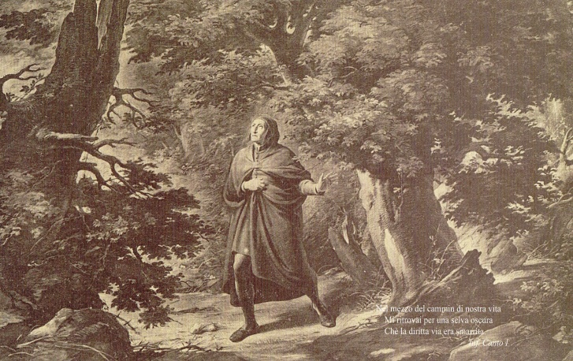

XML/TEI
Nel mezzo del cammin di nostra vita
Mi ritrovai per una selva oscura
Chè la diritta via era smarrita.
La Galleria Dantesca
Filippo Bigioli preparò di sua mano i bozzetti per le ventisette grandi tele rappresentanti alcuni episodi salienti della Divina Commedia con figure di dimensione quasi al naturale.
Le illustrazioni in b\n sono tratte dal catalogo della “Galleria Dantesca”, stampato nello stabilimento Alterocca di Terni nel 1912.
Per approfondire
Metadati descrittivi
| Autore | Filippo Bigioli |
|---|---|
| Data | 1854 |
| Soggetto | Inferno, Canto I |
| Scena rappresentata | Dante si ritrova all'interno della Selva Oscura, è all'inizio del suo Viaggio. |
| Tipologia | Bozzetto |
| Tecnica | Disegno su pergamena |
| Versi rappresentati | Vv. 1-3 |
| Colore | Bianco e nero |
| Provenienza | Galleria Dantesca |
| Committente | Cavalier Romualdo Gentilucci di Fabriano |
| Luogo di conservazione | Galleria d’arte moderna, palazzo Comunale, San Severino Marche |
| Riferimenti | https://www.viverecamerino.it/2021/03/09/la-galleria-dantesca-una-grandiosa-impresa-pittorica-dellartista-settempedano-bigioli/917667/ |